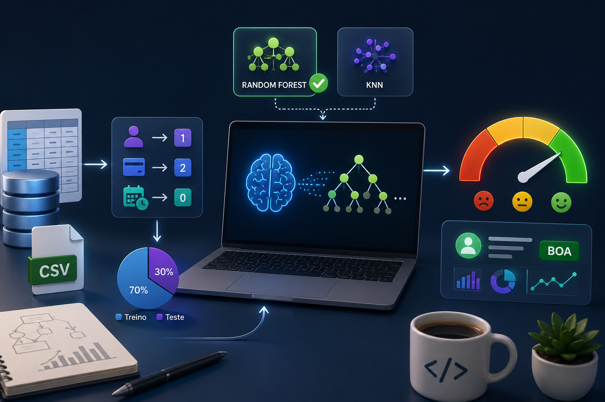

Concluído
Previsão de Score de Crédito com Machine Learning
Este projeto tem como objetivo desenvolver um modelo de Machine Learning capaz de prever o score de crédito de clientes com base em características financeiras e comportamentais.
PythonJupyter NotebookPandasScikit-learn